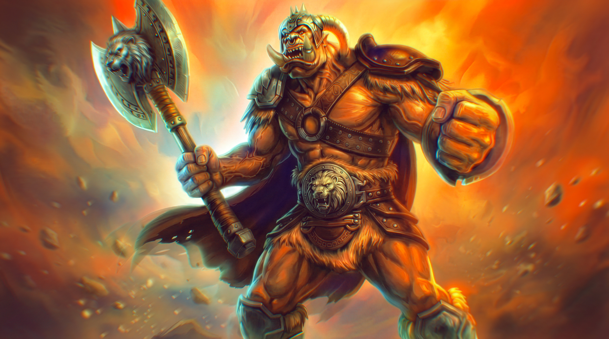
Visual Development • Digital Painting • Concept Illustration
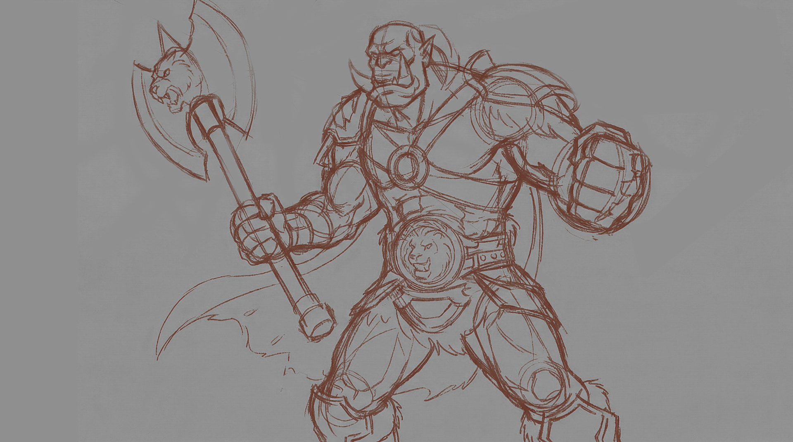
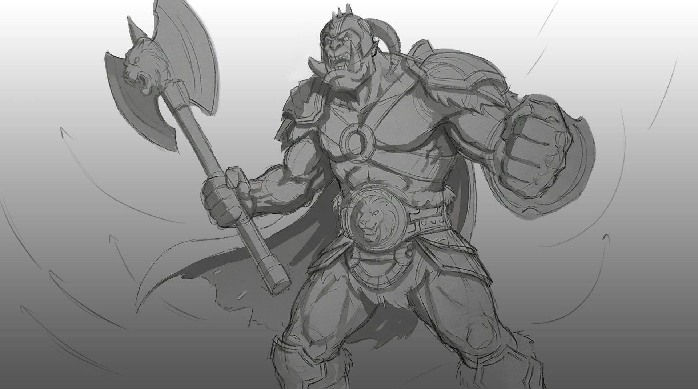
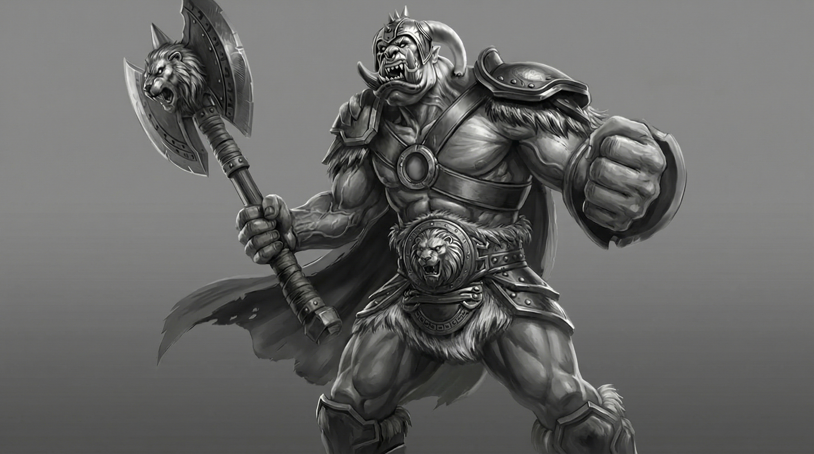
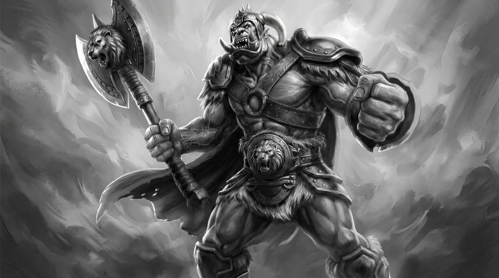
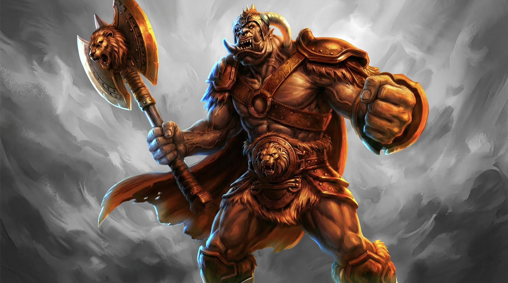
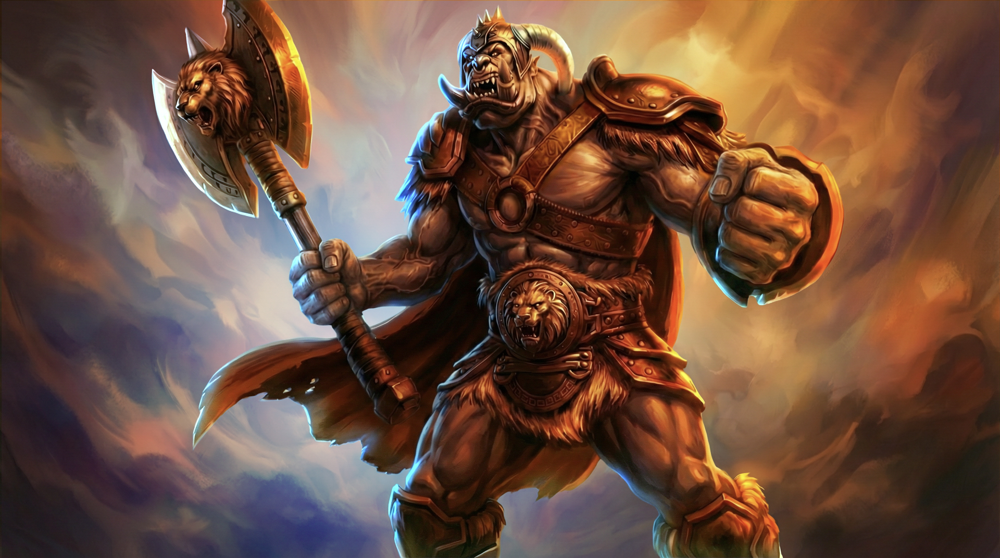
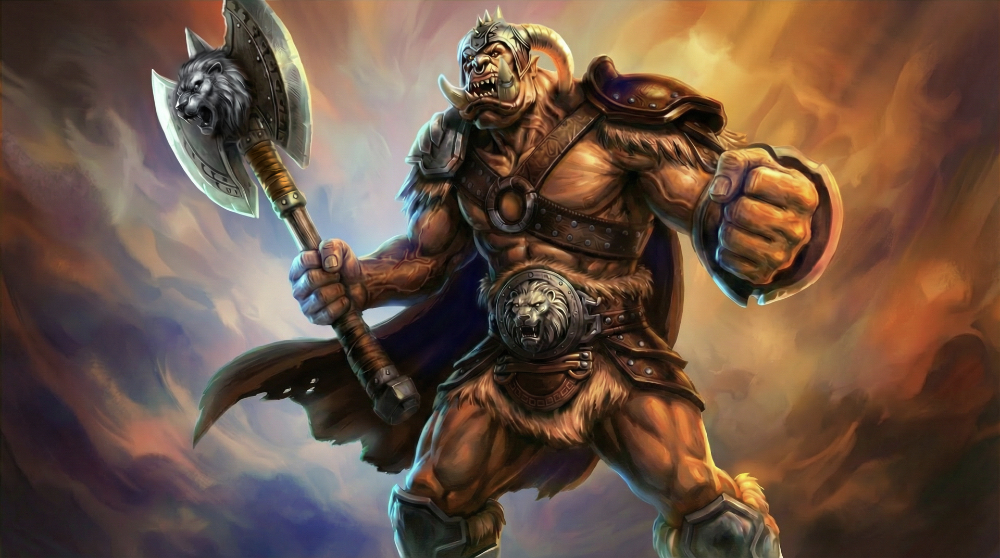
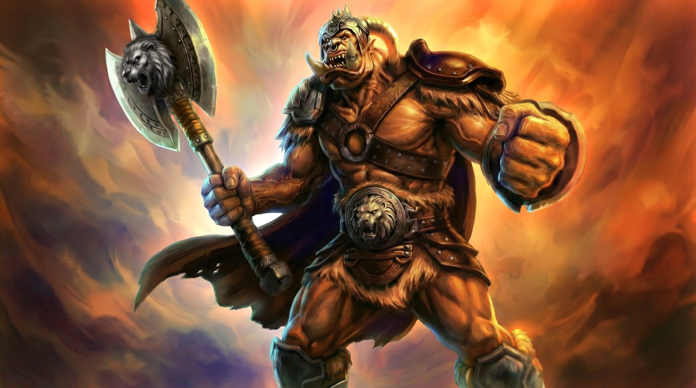
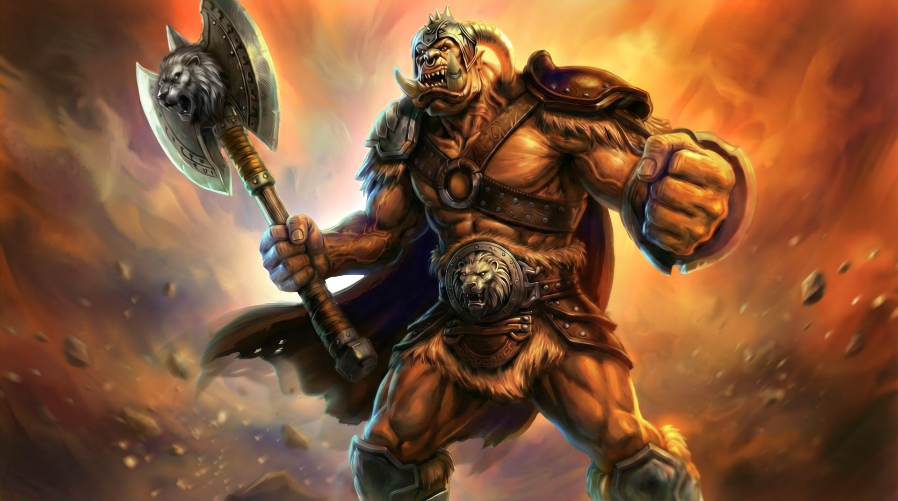
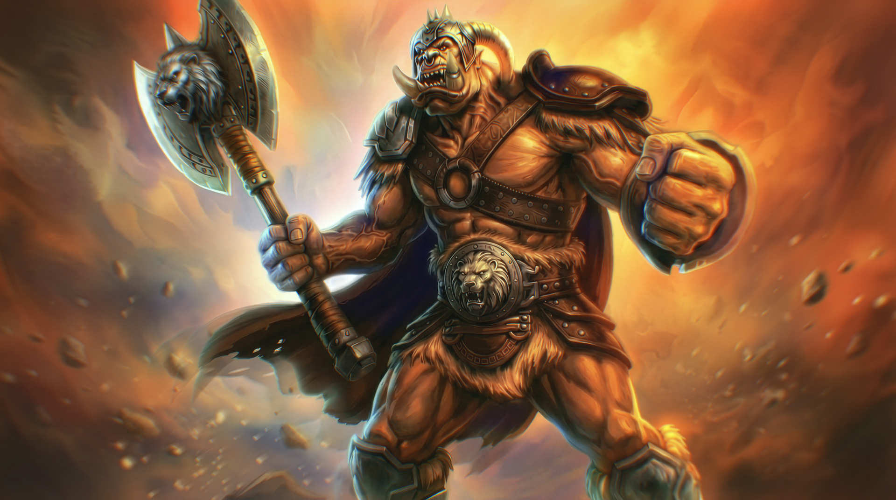
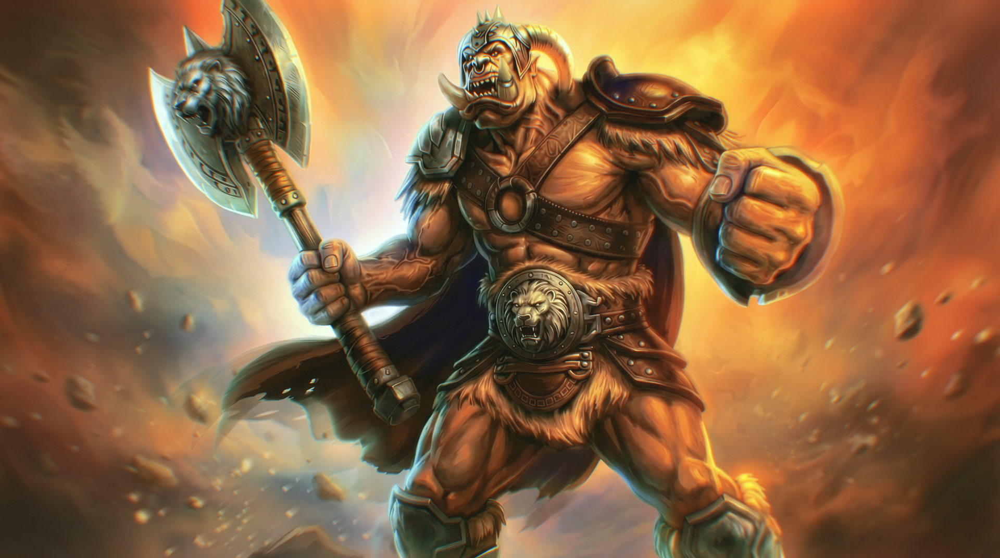
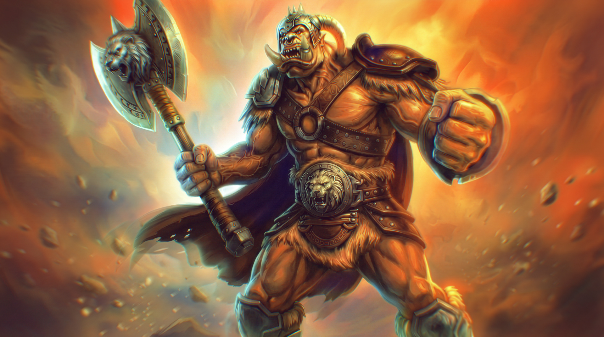
This project showcases the digital painting and visual development phase of the Orc Warrior. The focus was on capturing the raw power and character essence through dynamic brushwork, material rendering, and strong silhouette design. The transition from 2D concept to final 3D production started here, establishing the visual language and anatomy that would later be translated into sculpting and texturing.